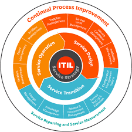

4. Explica el modelo ITIL
a. Resumen Descriptivo
Según (Armendáriz, 2017, p. 3), menciona que ITIL proporciona una descripción detallada de los procesos más importantes que debe llevar a cabo cualquier organización de TI, así como numerosas prácticas, procedimientos y métodos para la implantación de ITSM (IT Service Management). Estos procesos componen el Ciclo de Vida del Servicio, y se ponen en marcha en función de cada organización, su actividad, objetivos, etc., aplicándose en organizaciones de todo tipo de sectores y de mayor o menor tamaño.
Es un marco de mejores prácticas para la gestión de servicios de TI, que se centra en alinear los servicios de TI con las necesidades del negocio. ITIL ofrece un enfoque estructurado y detallado que permite a las organizaciones mejorar la eficiencia, calidad y rentabilidad en la entrega de servicios. Su objetivo principal es optimizar los procesos y asegurar que los servicios de TI proporcionen valor a los clientes y usuarios.
b. Línea de tiempo del modelo ITIL.
| 1980s | 2000 | 2007 | 2011 | 2019 |
| ITIL v1 | ITIL v2 | ITIL v3 | ITIL 2011 Update | ITIL 4 |
| Creado por el gobierno del Reino Unido para estandarizar la gestión de TI. Se publicaron aproximadamente 30 libros detallando diferentes aspectos de ITSM. | Simplifica ITIL v1 y agrupa los conceptos en un conjunto más manejable. Introduce el concepto de ciclo de vida del servicio y organiza los procesos en Service Support y Service Delivery. | Introduce el ciclo de vida completo del servicio, estructurado en cinco fases: estrategia, diseño, transición, operación y mejora continua del servicio. También reduce la cantidad de procesos y servicios. | Una actualización de ITIL v3 que clarifica conceptos y mejora la coherencia entre los libros. No introduce cambios significativos en la estructura, pero refina los procesos para facilitar su implementación. | Moderniza el marco para adaptarse mejor a enfoques como Agile, DevOps y Lean. Introduce el Sistema de Valor del Servicio (SVS) y las cuatro dimensiones de la gestión del servicio, ampliando el alcance para incluir todas las operaciones de TI en el entorno empresarial actual. |